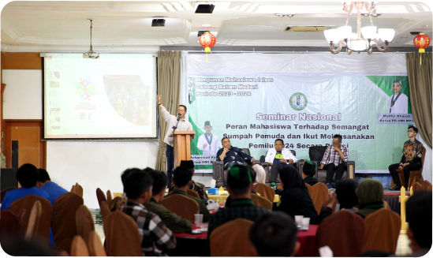

Anak Muda adalah Kelompok Produktif Penerus Estafet Kepemimpinan Bangsa
Wakil Wali Kota Batam Amsakar Achmad selalu menyempatkan hadir dalam kegiatan kepemudaan. Bukan tanpa sebab, kelompok ini disebut sebagai kelompok aktif pembawa perubahan dan penerus estafet kepemimpinan masa akan datang."Seluruh tahapan perjalanan republik ini tak lepas dari peran para pemuda," kata dia saat menghadiri seminar nasional kepemudaan yang diadakan HMI Cabang Batam Madani di Ballroom Golden Prawn, Minggu (29/10/2023).Peran ini didukung sejumlah karakter yang ada dalam diri pemuda. Pertama, pemuda adalah kelompok berada pada usia yang produktif, lalu memiliki energi yang luar biasa dan selalu menempatkan dirinya sebagai agen perubahan melalui sikap kritis kontruktif. "Oleh karena itu peran pemuda sangat penting," imbuhnya.
Maka dari itu, ia mengapresiasi hadirnya seminar tersebut, yang menurutnya dapat meluruskan kembali kontruksi berpikir atas peran pemuda dalam rentak perjalanan bangsa ini."Tadi saya juga menyampaikan tantangan ke depan, ketika bonus demografi dan pekerjaan konvensional mengecil. Tantangan ini perlu dicarikan jawaban atau jalan keseimbangannya.
Lanjut dia , yang didorong yakni anak muda hendaknya terus meningkatkan kualitas ke arah yang lebih mumpuni, salah satunya dengan memaksimalkan potensi perkembangan era digitalisasi dan teknologi informasi. "Ini menurut saya jawaban yang dapat memberikan harapan yang besar sehingga peran pemuda tak lekang zaman," ujarnya. (MC Batam/toeb)